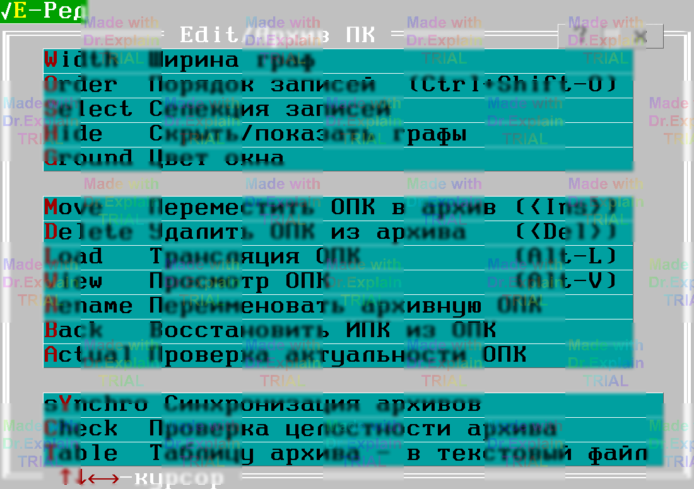
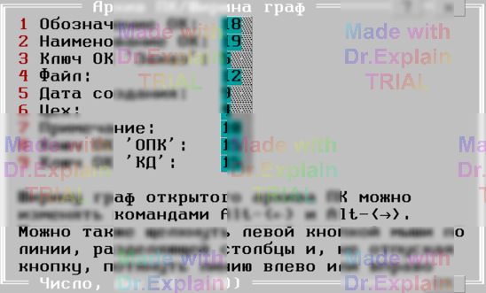
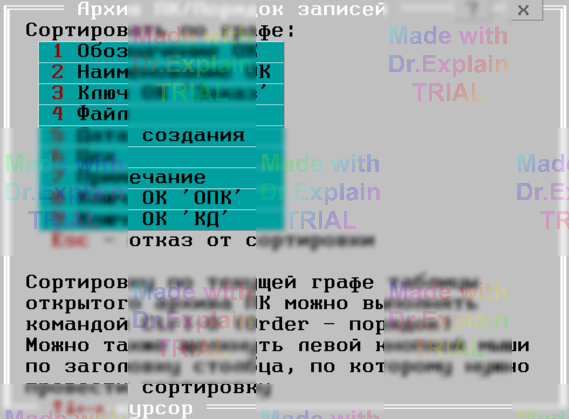
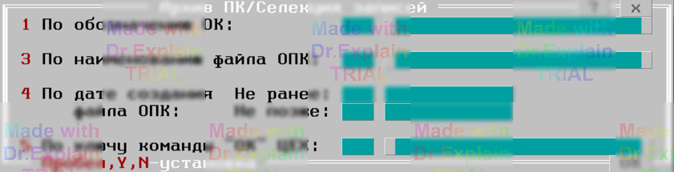
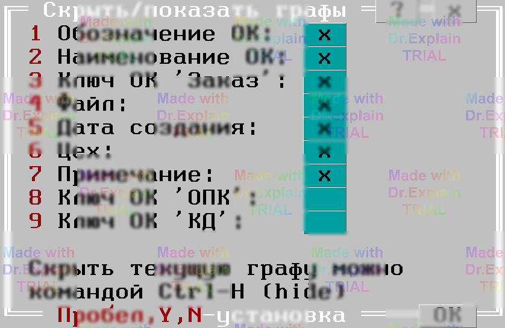

3. Редактирование архива программ контроля
Изменять состав архива ПК и то, как он отображается, можно через специальное меню Edit (вызывается Alt‑E), когда окно архива активно.

Используйте встроенную систему помощи ПОАСК:
- в нижней строке всегда выводится краткая подсказка по выбранному пункту меню;
- у всех пунктов меню есть подробная справка — выберите пункт клавишами ↑/↓ и нажмите F1 (или кликните правой кнопкой).
3.1 Команда «Ширина граф»
Позволяет задать ширину каждой колонки таблицы архива.

3.2 Команда «Порядок записей»
Определяет, по какому полю сортировать таблицу архива. Можно выбрать любое отображаемое поле или дату создания файла.

3.3 Команда «Селекция записей»
Фильтрует, какие строки показывать, по одному или нескольким критериям:

- По обозначению ОК — допускаются «
*» и «?»; - По имени файла ОПК — также возможны маски и явное указание расширения;
- По дате создания — диапазон «не раньше» / «не позже» (ДД.ММ.ГГ);
- По ключу «ЦЕХ» — допускаются маски и списки через запятую.
3.4 Команда «Скрыть/показать графы»
Определяет, какие колонки выводить в таблице:

3.5 Команда «Цвет окна»
Позволяет задать сочетание фона и текста для текущего окна архива. Выберите цвет фона, затем — цвет текста и подтвердите Enter.
3.6 Переместить ОПК в архив (Insert)
Перемещает проверенные файлы ОПК в архив (по паролю).
3.7 Удалить ОПК из архива
Удаляет выбранный файл ОПК после подтверждения (по паролю).
3.8 Трансляция ОПК (Alt‑L)
Компилирует выбранную ОПК и готовит её к выполнению.
3.9 Просмотр ОПК (Alt‑V)
Открывает текст выбранной ОПК только для чтения.
3.10 Переименовать архивную ОПК
Меняет расширение «.opk»/«.v01»… для управления версиями (по паролю).
3.11 Восстановить ИПК из ОПК
Извлекает исходный текст программы и сохраняет его в указанном месте.
3.12 Проверка актуальности ОПК
Сравнивает файл ОПК с текущим текстом ИПК и выдаёт резюме.
3.13 Синхронизация / создание копии архива
Приводит «копию» к состоянию «эталонного» архива: удаляет лишнее, дописывает недостающее, обновляет изменённое (по паролю).
3.14 Проверка структуры и целостности архива
Быстрая проверка — сверяет список файлов и записей.
Полная проверка — дополнительно анализирует
внутреннюю структуру всех файлов ОПК (по паролю).
3.15 Таблицу архива — в текстовый файл
Сохраняет текущий вид таблицы в plain‑text документ и открывает его для просмотра/печати.